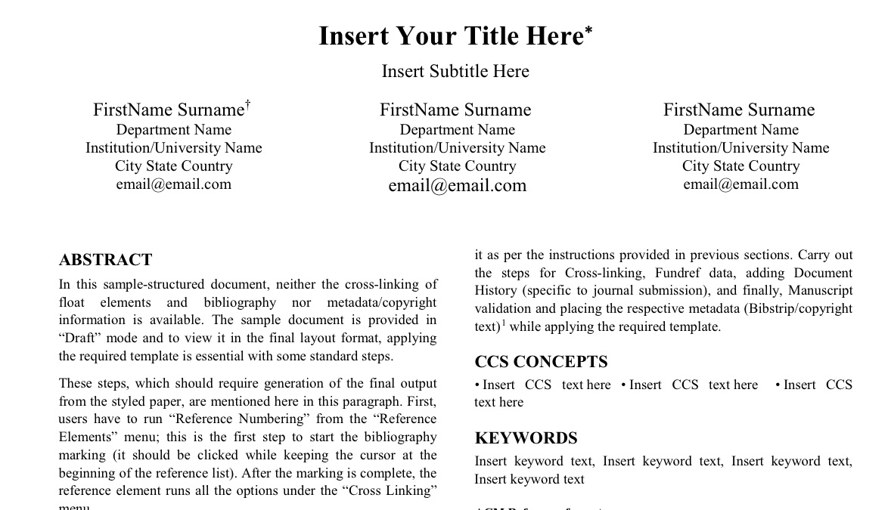

Computer Science and Software Engineering Capstone Presentations
20 March 2020
Download the program as a pdf file.
Click on the thumbnails, to view posters in full resolution.
Join the Zoom Room to attend the presentations
You can
download a UWB STEM
virtual background or
the flipped
version depending on how your video is configured.
{kind=link}
{kind=link}
Sessions Overview
Lobby Zoom: Any last minute announcements will be posted in the Lobby Zoom. You can also come in here to text or video chat with other attendees. Meeting ID: 774 803 693
Zoom Etiquette: Mute your microphone. Turn on your video if possible, so you are providing an engaged audience rather than a blank page to the presenter. If you have a question, use "Raise Hand" under Participants in Zoom controls. At the end of the presentation, use "Clap" under Reactions to show your appreciation of the presentation. Treat being a Zoom audience similar to being an audience in a regular presentation, excessive fidgeting or moving around can be distracting to the presenter. If you or anybody in the hosehold is streaming video during the presentation, you may get choppy video or see an "instable connection" sign. If you are using a laptop machine, plug it in so you don't run out of power during the presentations or worse run out of power when you are presenting!
CSS Students: All CSS students must attend a CSS Colloquium before they complete their own capstone and present at a CSS Colloquium. If you are a CSS student and you need to document that you have attended the colloquium, fill out the form at http://bit.ly/css2020winter-attendance
| Room-1 | Room-2 | Room-3 | Room-4 | |
| Room-1 Zoom Meeting ID: 576 664 887 |
Room-2 Zoom Meeting ID: 367 431 032 |
Room-3 Zoom Meeting ID: 196 394 993 |
Room-4 Zoom Meeting ID: 284 506 510 |
|
| 12:30 | Brandon Kinard "Identification and Intervention to Prevent the Propagation of Misinformation on Online Platforms" Advisor: Laurie Anderson |
Mitchell Kane "GoLang Weather Microservice" Advisor: Erika Parsons |
Zachary Brader "AuNemoLib C++"  Advisor: Wooyoung Kim |
Kaib Cropley "TableSafe Internship" Advisor: Marc J Dupuis |
| 12:45 | Shelby Mirziteh "User Interface Development with React.js" Advisor: Laurie Anderson |
Jakob Delzer "Building a web application to remotely access electrical engineering labs" Advisor: Min Chen |
Yue Chang "Cross-platform Mobile App for JIA Research Project" Advisor: Dong Si |
Emir Dzaferovic "Automated Mobile App and Web Testing" Advisor: Munehiro Fukuda |
| 1:00 | Ngoc Duy Nguyen "TASTEFOOD - A Food Truck Finder App" Advisor: Nancy Kool |
Chelsea IP "MedIntellibase Internship - Backend & Mobile" Advisor: Min Chen |
Aaron Handjojo "Making a Digital Card Game" Advisor: William Erdly |
Chyanne Haugen "Internship at SAP Concur" Advisor: Munehiro Fukuda |
| 1:15 | Ethan Silvas "Full-stack Cloud-based Web Applications at Nintendo" Advisor: Nancy Kool |
Rayyan Hussain "T-Mobile TechX Internship" Advisor: Min Chen |
Gi Lee "QuickCheck" Advisor: William Erdly |
Joshua Landron "MASS C++ Update and Benchmarking" Advisor: Munehiro Fukuda |
| 1:30 | Pratit Vithalani "Software Engineering Internship at Amazon" Advisor: Yusuf Pisan |
Abbad Vakil "Automating Rest API Testing at Visa" Advisor: Min Chen |
Sneha Ravichandran "Clapped Internship: Full Stack Development using Django" Advisor: William Erdly |
Tyler Malan "Internship at Smartsheet" Advisor: Munehiro Fukuda |
| 1:45 | Alan Luu NoteHub: Android & Django Development Advisor: Yusuf Pisan |
Ibrahim Mohiuddin "Mu Sigma Capstone Project Software Development Internship" Advisor: Min Chen |
Patrick Dodd "Runalytical - Using React, D3, & Firestore to visualize fitness data" Advisor: Mark Kochanski |
Brian Tang "Core Development at Airship Industries, Inc"  Advisor: Munehiro Fukuda |
| 2:00 | JD Mauthe "Notehub: Django Backend Development" Advisor: Yusuf Pisan |
Emily Krasser "Cloud Services Internship" Advisor: Kelvin Sung |
Omar Iqbal "FlowBy Android Application" Advisor: Mark Kochanski |
Kevin Wang "Privacy-Preserving Mobile Video Sharing using Fully Homomorphic Encryption"  Advisor: Brent Lagesse |
| 2:15 | Umair Qureshi "Virtual Presenter Pro" Advisor: Arkady Retik |
Joel Maxwell "Fujifilm SonoSite Internship"  Advisor: Kelvin Sung |
Pranav Sakthivel "Pathway Algorithms at The SwiftPath Program" Advisor: Mark Kochanski |
Brian Hou "Nike Global Technology Internship" Advisor: Arnie Lund |
| 2:30 | Kyle Lotterer "Virtual Presenter Pro" Advisor: Arkady Retik |
Manvir Singh "Intern at CloudMoyo" Advisor: Mark Kochanski |
Trenton Mueller Microservice Development for Blob Storage Advisor: Arnold Lund |
|
| 2:45 | End of Presentations - Meet in Lobby | End of Presentations - Meet in Lobby | End of Presentations - Meet in Lobby | End of Presentations - Meet in Lobby |
{kind=link}
{kind=link}
{kind=link}
{kind=link}
{kind=link}
{kind=link}
{kind=link}
{kind=link}
{kind=link}
{kind=link}
{kind=link}
{kind=link}
{kind=link}
{kind=link}
{kind=link}
{kind=link}
{kind=link}
{kind=link}
{kind=link}
{kind=link}
{kind=link}
{kind=link}
{kind=link}
{kind=link}
{kind=link}
{kind=link}
{kind=link}
{kind=link}
{kind=link}
{kind=link}
{kind=link}
{kind=link}
Presenters
Zachary Brader
"AuNemoLib C++"
Industry Sponsor: University of Washington Bothell
Faculty Advisor: Wooyoung Kim
Abstract: Network Motifs are statistically unique subgraph patterns that exist in networks. Identifying them is an important task but can be also quite time consuming and expensive. One of the solutions, the Network Motif Library, also known as “NemoLib”, significantly reduces the cost and time necessary to identify these subgraph patterns. NemoLib was originally written using Java, and later C++. The C++ version lacked multiple features that the current version of NemoLib Java and had a significantly slower runtime compared to the Java version. In order to improve upon the current C++ version, the application was extended to include the additional functionality that it lacked, its data was verified for correctness, and various methodologies were tested and implemented to improve it. By reducing the overhead during execution and fixing some bugs that caused the C++ version to incorrectly parse information, the runtime was drastically reduced. With the newly implemented changes, the C++ version is now a more competitive option on the market.
Yue Chang
"Cross-platform Mobile App for JIA Research Project"
Industry Sponsor: Seattle Children s Hospital
Sponsor: Yongdong Zhao
Faculty Advisor: Dong Si
Abstract: Juvenile idiopathic arthritis (JIA) is the most common type of arthritis among children. Current screening methods of JIA require clinical visits which is challenging for families located in rural areas of Pacific Northwest, since Seattle Children’s Hospital is the only screening facility in the entire region. DAIS group tries to create ways to help screening the JIA disease remotely and efficiently by developing mobile apps for smart phones with thermal camera attached. The project utilizes thermal images and machine learning techniques to perform the pre-screening based on the fact that inflamed joints have higher temperature than surrounding healthy tissues. A mobile application front-end interface is developed in this capstone to enable taking and uploading images, getting help from technicians at local clinics, and performing pre-screening in seconds. The mobile app is cross-platform and connected to a back-end web service that can run machine learning model to analysis patient data. Patients and technicians can upload their information, upload images, review their information and update it. The mobile app is built in C# on .NET using the Xamarin framework. So far, the mobile app is able to create new patient account, send the creating-patient request to the service and get respond back, take images with instructions, upload images to server and get response back. The mobile app is able to run on both Android OS and iOS.
Kaib Cropley
"TableSafe Internship"
Industry Sponsor: TableSafe
Sponsor: Taylor Dabb
Faculty Advisor: Marc J Dupuis
Abstract: During my internship with TableSafe I worked with the Embedded Engineering team to improve and develop new features for a handheld pay at the table system called the RAIL. We were a part of a fast paced agile style project management engineering team with two week long sprints. I began the internship by developing a new way to parse and organize status and error messages for customer support as they were sent from the RAIL. This led me to designing and implementing a category and subcategory system that allowed support staff to easily filter messages to quickly discover the source of the customer's issue. After the category system was finished, I moved to redesigning how the RAIL would store and process offline transaction data. Through changing the number of files normally used and file formatting that was used to store transaction data I was able to reduce the average amount of memory used while processing transactions by a minimum of 50% and decreased the amount of read write operations by 30%. While working on the RAIL I was able to experience development for an embedded system with very limited processing and memory capabilities. This taught me to always design and implement with getting the maximum possible performance in mind.
Jakob Delzer
"Building a web application to remotely access electrical engineering labs"
Student Defined - Group Project
Sponsor: Arnold Berger
Faculty Advisor: Min Chen
Abstract: The goal of the project is to create a website that will allow UW students to reserve and remotely access lab machines. The lab machines are Windows computers that are connected to an ELVIS device that the lab will be performed with. UW Bothell’s Electric Engineering students will be able to work on labs from their homes. The design of the project consists of multiple parts, a website, a database, and remote desktop setup for the machines. For the website, I have used some open-source appointment scheduling skeleton to expand upon for this use case. I have changed the access to the website to only allow UW netid accounts to access the appointment creation. Appointments are 2 hour long sessions that can be reserved by any UW student or faculty. The appointment can be accessed on the website during the reserved time. A Remote Desktop Connection file will be downloaded that will connect to the reserved computer. A database on one of the lab machines is running a MySQL 5.6 server. The database stores all of the appointment, user, lab, and computer information. The website is hosted by UW’s vergil web host and is then able to connect safely to the lab machine’s server. The rest of the project is setting up the computers to be able to manage permissions for the remote desktop connections. This is done with PowerShell scripts that are run through the task scheduler at different times of the day. The scripts access the database and if that machine has an appointment, the NetID will be added to the remote desktop permissions. Every 2 hours, if there is an upcoming appointment warning will be put out and then users will be disconnected and removed from the permissions, so the next user will be able to access the lab. Documentation has also been created to help future students improve or change the current system.
Patrick Dodd
"Runalytical - Using React, D3, & Firestore to visualize fitness data"
Student Defined - Individual Project
Sponsor: Jack Lightfoot and Nicholas Runte
Faculty Advisor: Mark Kochanski
Abstract: Using D3, React, and Firestore I built a full stack web application that functions as a data visualization and analysis tool by using fitness data about running activities from the mobile app Strava. Mobile fitness applications are very useful, but they have certain limitations in what you can do with the data. For example, in Strava, if you would like to compare data from runs of similar distances, the application only compares routes that are geographically identical. My idea was to create a web application that would augment what a user could do with their data. In doing so, the hope is that runners and coaches might be able to better utilize the data being generated by Strava in their training. This process, of course, included learning D3, React, and Firestore. I also used the Scrum tools in Yodiz to manage this project and to do things like creating a product backlog, creating weekly sprints and tracking my progress. The purpose of this project was to build an application that could help runners and coaches use an app like Strava to drill down into their training data more effectively, but also to learn in-demand skills and increase my abilities in using modern web technologies that many employers are looking for, to gain experience using the Scrum methodology, and to work with sponsors to hone a quality final product. Throughout this project I was able to strengthen my skills in the stated technologies. To increase my experience using Scrum as an SDLC, and to work with my sponsors and faculty advisor to get feedback. The end result is a full stack web application built with modern tools that could successfully be used to visualize and analyze running data. I gained valuable interpersonal experience in working my sponsors and advisor. I was able to utilize the Scrum SDLC. All these activities were valuable in building a portfolio that in addition to my impending degree, will hopefully help me create a strong resume and a more solid base of experience that I can bring to a future employer.
Emir Dzaferovic
"Automated Mobile App and Web Testing"
Industry Sponsor: Sofy.AI
Sponsor: Syed Hamid
Faculty Advisor: Munehiro Fukuda
Abstract: During the summer of 2019, I worked at Sofy.AI as a Software Development Intern. SOFY.AI is a start up business that provides clients with a more efficient means to testing software, particularly through automation. The main objective of my internship was to help create an automated testing platform that would be suited towards retail applications. This included working with Sofy.AI’s in-house machine learning algorithm and API tools, as well as several different APKs from some of the most known mobile retail applications like Amazon, Target, Walmart, and Ebay. The purpose for this was to help retail client applications create more efficient, effective, and vigorous tests. At the end of my internship, I learned a lot about why testing software is so vital, how much time it can require from the development teams, and why a company may want to outsource this process to other companies like Sofy.AI. I also gained a better understanding of how broad the computer science industry is, and how software testing can be utilized in many different ways.
Aaron Handjojo
"Making a Digital Card Game"
Student Defined - Individual Project
Sponsor: Kelvin Sung and Nancy Kool
Faculty Advisor: William Erdly
Abstract: For my capstone personal project, I converted my existing tabletop card game into a digital card game. I polished the game's rules, art, and balance with knowledge I gained from my CSS490 class and I used Unity to develop the digital game. I did this project to expand my knowledge in video game development, architecture, and UI design which I plan to use in the future for work. The game is successfully finished and works very well. The cards are automated and the player can play against an AI. Through this project, I learned how to properly balance and design games. I also learned video game architecture, UI design, and animation in Unity.
Brian Hou
"Nike Global Technology Internship"
Industry Sponsor: Nike
Faculty Advisor: Arnie Lund
Abstract: This past summer, I completed a Nike Global Technology Internship down in Beaverton, Oregon at the Nike World Headquarters. I was an intern on the Personalization Team within the Nike Global Technology Department. Our Personalization team's general goal was to serve product recommendations through any of the Nike platforms such as the Nike Running Club App, Nike Training Club App, Nike.com, etc. using Machine Learning models. In addition to serving recommendations for our end users, our Personalization team also created and provided some of the tools supporting the end-to-end development and deployment of machine learning models for Data Scientists, so that they were able to own the lifecycle of their models with no need for handing it over to other teams. The software engineering team that I was a part of was involved in the Agile Software Development process with one month long Sprints and also heavily leaned on the successful Consumer Direct Offense business model for impacting consumers.
Chyanne Haugen
"Internship at SAP Concur"
Industry Sponsor: SAP Concur
Sponsor: Yovka Pencheva
Faculty Advisor: Munehiro Fukuda
Abstract: This past summer I completed an internship at SAP Concur a software company in Bellevue Washington. SAP Concur is a software as a service company that produces and maintains travel, expense, and invoice management services for businesses. The team that I worked with owned the user profiles service and is currently working on an extensive project to move the current service onto Amazon web services (AWS). The move to AWS was needed because the current monolithic database could not handle the number of users that were logging in to the site and after a limit was reached users were not able to log in. The projects I completed during my internship were developing a way to test the new database, updating fields stored in a database, and implementing a feature to sync data fields across two databases. Most of this work was to help with the shift from the old database to the new database. The test monitor I created to test whether the new database was running, is currently being used by my team so they can be updated on the status of the new database and alerted if something is wrong.
Rayyan Hussain
"T-Mobile TechX Internship"
Industry Sponsor: T-Mobile US
Sponsor: Caryn Charpier
Faculty Advisor: Min Chen
Abstract: As part of the T-Mobile TechX internship program, I was selected to be a software engineer placed on the CCT design team, which creates and enables solutions for T-Mobile contact centers to receive, place, schedule, route and deliver customer calls to the appropriate representatives. The project I was assigned was a large dataset management tool for toll-free numbers operated by T-Mobile. The old solution had this dataset housed in Microsoft Access, which is known to be not only bulky but also slow and time-consuming. Due to the nature of the task, it was concluded based on intensive research and planning that there be an application built out from scratch to maintain this database. This application, which is referred to as the TFN tool, is a tool that is a full-stack web-based application. The application itself is created with three main components. These components are the front end, back end, and the middleware of the application. The front end of this application is created using Angular. The angular portion is not only for creating the user interface, but also to interface with the API. The API itself is built using C# with the backend based in a database in Microsoft SQL Server. The features of this application include realtime searching functionality, the ability to edit a toll-free number from within the UI of the application, as well as the ability to add additional records or toll-free numbers into the database using the UI. All of these features allow the CCT design team to effectively manage the toll-free database without the need to query the database using SQL. The application also makes it easier to manage this database due to the ease of access and visual feedback this application provides. The application will overall save the team time in managing, maintaining, and tracking the data that this application is managing.
Omar Iqbal
"FlowBy Android Application"
Student Defined - Individual Project
Faculty Advisor: Mark Kochanski
Abstract: For my capstone, I chose to develop an Android application that was currently not on the market. The app is a travel companion app that is capable of managing multiple trips, budgets, events, attractions, and personal belongings. I developed this using the Flutter framework made by Google, as I wanted this app to be fully integrated with many Google services. During my time working on this project, I did every job necessary in creating a full stack application. I initially started with requirements elicitation to discover user requirements then moved on to creating user stories and deriving functional and non-functional requirements. From there, I moved on to the development of the app which I hosted on Google’s Firebase mobile development platform. I did back-end work which required database management and knowledge of No-SQL databases. I also, in tandem, developed the front end of the app through Flutter which required understanding of Android and it’s material design. This app is meant to prevent users from losing their belongings, not being able to find interesting attractions, or exceeding their allotted budget for the trip. As well as that, this app should act as a virtual guide that can help the user plan their next trip.The resultant application has integration with Google Maps, Google Places, and Google Accounts to allow users to sign into the application with Google. The back-end of the application involves the storage of all the user’s information, such as saved personal belongings and bookmarked attractions, in a non-relational database called Google’s Cloud Firestore. The front-end of the application is made with the Flutter framework with an emphasis put on UI design. This front-end also contains all the business logic that communicates with the back-end and API’s, and processes requests that the user makes. The final result of this project I undertook is a nearly complete full stack application that, as of now, can provide useful features for those who are travelling. The significance of the application is that it will make an impact in how people approach their trips. It will help users if they get lost, with its built in Map feature, will remind users to check their belongings, as to not lose them, and will allow users to use it as their own calendar, with its built in calendar and event system. More personally, the significance of this project is that it taught me about Android development, back-end database management, front-end UI design, and the process of developing an application in an agile manner.
Chelsea IP
"MedIntellibase Internship - Backend & Mobile"
Industry Sponsor: MedIntellibase Intelligence Solutions/ The Next Phase Inc.
Sponsor: Alice Lee and Victoria Hunsicker Sanko
Faculty Advisor: Min Chen
Abstract: During my 8-month internship with MedIntellibase Intelligence Solutions, I balanced among three different roles (Front End, Back End and Mobile App Development). Some of my work include - Redesigning web templates on the automation website (UI) and increased search tool features. - Dissecting code and document plugins, libraries, and/or APIs to debug any error condition encountered during testing. - Performing code migration to refine the automation website from Python 2.7 to Python 3.5 for new prospective clients. - Extensively using Django technologies, which includes forms, templates, and Object-Relational-Mapping for communication with databases in different forms. - Working with App team to use Azure Notification Hubs and Firebase server to send customers push notifications across iOS/Android platforms. - Collaborating with Technical Lead and project team members daily on project progress and status. The goal of my internship was to upgrade and refactor an existing system (of about 4 years) over the course of 6 months. Python 2.7 was no longer supported in January 2020, therefore we had to upgrade the entire system to Python 3.5 in order to improve workflow for content managers. I've also worked with the company's client to customize mobile features over the summer, this enabled both iOS/Android users of the app to receive curated news from qualified medical sources at their convenience.
Mitchell Kane
"GoLang Weather Microservice"
Industry Sponsor: EagleView Technologies
Faculty Advisor: Erika Parsons
Abstract: During my summer internship at Eagleview, I was tasked with creating a weather api micro service in GoLang (Go). There were a lot of technical unknowns for me to overcome including learning Go, Visual Studio Code, the windows platform, Docker, AWS, and Github. There were also workplace unknowns such as how to interact during scrum and sprint meetings, determining my resources for certain issues (who to ask), and how to effectively ask questions of coworkers and leaders. There are two driving forces for why I was assigned this task. First, the company is transitioning from a monolithic architecture where all aspects of “What” the company provides succeed and/or fail as one service, to a micro services architecture where the service as a whole is actually comprised of many smaller services (micro services). The second reason is that as the company has grown and acquired smaller companies, there has developed a need to refactor legacy code in many languages into one unified language. Go offers better concurrency performance than their currently utilized languages. The result of my efforts were twofold. For me I gained the experience and confidence that I can learn something as great as an entire new language, as well as be successful in the software industry interacting with other professionals. For the company, I was the first person at the Bellevue office to program in Go. The fact that an intern could successfully accomplish this, and flush out some unforeseen issues, inspired other employees they could as well. When I left, my program was being handed off to the next level of development- integration and end-to-end testing for bug triage and and optimization.
Brandon Kinard
"Identification and Intervention to Prevent the Propagation of Misinformation on Online Platforms"
Applied Computing, Minor Mathematics
Faculty Advisor: Laurie Anderson
Abstract: No abstract required for Applied Computing capstones.
Emily Krasser
"Cloud Services Internship"
Industry Sponsor: Unity Technologies
Faculty Advisor: Kelvin Sung
Abstract: Over the summer of 2019, I interned at Unity Technologies as a Cloud Computing Software Developer on the Collab team. Along with another intern on the same team, we were expected to choose a project to work on over the summer and we chose a project called Live Notes. Live Notes is a live commenting service in the Unity Engine, giving you the ability to converse with your team directly in the editor and to create notes associated with GameObjects in a scene or assets in your project. Over the course of this internship I was able to contribute multiple new features to Live Notes as well as optimize parts of its pre-existing code base. The result of my internship not only increased my programming and collaborative abilities, but furthered the development of Live Notes closer to an eventual release as a package on the Unity Engine.
Joshua Landron
"MASS C++ Update and Benchmarking"
UWB CSS Faculty Research
Faculty Advisor: Munehiro Fukuda
Gi Lee
"QuickCheck"
UWB CSS Faculty Research
Faculty Advisor: William Erdly
Abstract: This capstone project is from the EYE center at the University of Washington Bothell research lab. The project is focused on the vision screening tool for the children in order to raise awareness of the importance of functional vision in children for learning. This capstone brought me to experience an how to iterate current project through user experience design process. I competed successfully on the brand making, layouts for the mobile app through lo-fi and hi-fi prototypes.
Kyle Lotterer
"Virtual Presenter Pro"
Student Defined - Group Project
Sponsor: Colby Easton
Faculty Advisor: Arkady Retik
Abstract: For my capstone, I worked as a lead developer in a team of five programmers. Over the span of nine months, we created a virtual reality program that helps users practice public speaking and gives helpful feedback. The purpose of the application aims to better prepare individuals for their presentations in their classes and their careers. I formed a company with four peers to create this program from scratch using the Unity development engine and the C# language. In the beginning, we had regular sprints to design the program from scratch by setting goals, identifying requirements, and writing user stories. When we fleshed out the basic outline of the project, we started the development process. In order to support multiple people working on the same project, we used Unity’s built-in collaboration tool to keep a base version and coordinate work. We also used Trello to maintain task delegation and a loose schedule. In terms of my contribution, I was the leading role in the design process and created the early prototype that inspired the collective commitment to the project. When the development process began, I took full responsibility for the virtual reality integration and multiplatform support. This includes making the program function for the Oculus Rift, HTC Vive, and Windows Mixed Reality Headset. I also developed all virtual reality aspects of the program using the SteamVR API, such as movement by teleportation, picking up objects, and monitoring the user’s head movement. Near the end, I coded the head tracking algorithm that informs the user if they were ignoring segments of the audience. I learned so much from pushing this project through the development stages. I strengthened my soft skills by communicating effectively with a team through practicing agile development. I learned how to use a variety of collaborative tools and mastered version control. I became adept at working with virtual reality hardware and how to creatively integrate it with software. We also did user testing and I learned how helpful various feedback can be. Overall, our project was a success and we plan to sell it on a virtual marketplace at the end of the quarter.
Alan Luu
"NoteHub: Android & Django Development"
Student Defined - Group Project
Sponsor: Aden Shukuroff and Aaron Vega
Faculty Advisor: Yusuf Pisan
Abstract: The purpose of this project was to create an android application called NoteHub to provide a platform for college students to exchange notes with each other. In doing so, the goal is to help students discover additional resources, so that they can succeed in their classes. The NoteHub project is a collaboration between two UW Bothell students. One of them would be responsible for the front-end side, while the other would oversee the back-end development. My role is the front-end, which is Android development. My planning process was to research about Android Studio and APIs. Afterward, a rough sketch of the project was drawn to layout the key features of the application. This was used to create visual wireframes of the project and later used to design the UI. Once all these tasks were completed, the Android development process commenced. The GUI was coded in XML, and the elements within the GUI was programmed in Java code. Furthermore, the users’ information would be display in the GUI using API calls to retrieve the users’ information from the back-end server. New features would be implemented every week and tested by two sponsors. At the end of the Android development process, a usability test was done on 17 participants. This was used to gauge if the UI was user-friendly. The participants' feedback was collected and applied to the application to improve the UI.
JD Mauthe
"Notehub: Django Backend Development"
Student Defined - Group Project
Sponsor: Aaron Vega and Aden Shukuroff
Faculty Advisor: Yusuf Pisan
Abstract: The goal of this project was to create an Android application to allow students to be able to share notes with other students. I built the back-end server that was required to support the application using the Django REST framework. Before starting on the development of the back-end, I setup an AWS server. After setting up the server, I created a virtual python environment and installed python packages such as Django, Django REST framework, and pillow. After creating a git repository for the back-end, I started the development of the back-end. The development of the application focused on creating prototypes rapidly for testing. We used an iterative approach and developed seven prototypes throughout the project. Each of these prototypes focused on adding a specific feature to the application. I provided the functionality for these features by creating API endpoints for the Android application to use. After each prototype was completed, the prototypes were tested by our two sponsors: Aaron Vega and Aden Shukuroff. Based on the feedback from our two sponsors, we implemented the suggested changes within the application. After completing the final prototype, we tested it for usability. We were able to find 17 volunteers in total. Each volunteer user was given 10 tasks to complete. The usability was tested during these tasks by recording the completion rate and having the users answer questionnaires during the test. Based on user feedback and data collected, we fix some minor issues regarding the usability of the application. The result of this project is a fully functional android app that is powered by a back-end server. Currently the application only support image files such as jpg and png. This can be expanded to support other types of files such and pdf and txt. While the scope of this project only focuses on students, the project could be expanded to support anybody in general by allowing notes from outside courses.
Joel Maxwell
"Fujifilm SonoSite Internship"
Industry Sponsor: Fujifilm SonoSite
Faculty Advisor: Kelvin Sung
Abstract: I participated in a twelve-week internship with SonoSite, a company in Bothell that specializes in creating point-of-care ultrasound systems. The team that I interned with develops the software for a product powered by an Android-based operating system. Independent of this product, SonoSite has a proprietary cloud service that the ultrasound machines can access with a certificate. The cloud service was already accessible by some SonoSite products, but not by the Android-based system. During the internship, my tasks were to write a program for obtaining and installing a certificate on this system, and to create an app that demonstrates the system interacting with the cloud service using the installed certificate. When I started the internship, I was unfamiliar with the systems that I was working with, so I focused on writing flexible, modular code that is simple to interface with. I implemented functional aspects of my project first and determined exactly how they fit into the product last. This approach allowed me to work on useful, demonstratable components throughout the internship without being overwhelmed or getting stuck. Over time, I learned more about the Android system and cloud service infrastructure by reading documentation and talking to my mentors. Before the end of the internship, I fulfilled my first task by presenting C++ code that runs natively on Android to retrieve and install a certificate. This code became a module of the suite of tools to be used during the manufacturing process. I fulfilled my second task by demonstrating that the certificate can be used to access the cloud services with a simple Android app that I created using Android Studio. To ensure that this implementation would be useful for more than just demonstration, I packaged code that the app uses to access the cloud service as an independent Java library. With this library, any developer at SonoSite can create a more useful application or service without repeating the work I already did to create the demonstration app.
Tyler Malan
"Internship at Smartsheet"
Industry Sponsor: Smartsheet
Faculty Advisor: Munehiro Fukuda
Abstract: During the internship with Smartsheet, my primary project was to design and implement an autocomplete feature for their main page search bar. This was a full-stack development project that required a full application of the skills I've learned at UWB. There were some additional, minor elements to the internship, but these were ancillary to the primary project. This project was assigned to increase customer efficiency when working. The ability to find what you need faster allows for one to do more work in less time. It also reduces the reliance on the full search function, which is more expensive to execute than a limited search like autocomplete. At the end of the internship, I had finished half of the project overall. This was fine and planned - eventually, the project was split into autocomplete and autosuggest, and I handled autosuggest. I finished enough of that portion of the project successfully so that it could be fully tested. The feature was released internally for testing, allowing employees to see and experience the usefulness of the feature. Employees have had their efficiency increased, and this will expand to the customer base when fully released to production.
Shelby Mirziteh
"User Interface Development with React.js"
Industry Sponsor: Computing Kids
Sponsor: Ritu Bahl
Faculty Advisor: Laurie Anderson
Abstract: As a User Interface Developer Intern for Computing Kids, I was tasked to help create a job application portal specifically designed for entry-level technology professionals. As part of the Digital Skills for All non-profit foundation, Computing Kids seeks to connect undeserved communities with the current and necessary tech skills needed to succeed in their future. This mission is one that is very important to me, and working on that mission has given me a great sense of accomplishment. I had to learn many new tools for designing and creating a great website that visitors would actually want to use. It was my first time developing in an Agile development framework; attending daily stand-up meetings and tracking a feature backlog. I began to use Axure to design rich mock-ups and collaborate with others in a design team. I learned how to code in React.js to build user interfaces that allowed me to reuse data and components, wherever they were needed. And I found that Redux could allow me to update information across an entire website easily. There were many challenges to be overcome during the course of the internship. With a team of only seven inexperienced interns and an inexperienced Project Manager, we were all learning new skills together. This caused much confusion and many stumbles in our development process. While designing and coding the website, sometimes we found ourselves unsure as to what tools needed, leading us to research possibilities and figure things out by trial and error. In the end, it sharpened our engineering minds and opened us up to new technologies that we wouldn’t have known about otherwise. Aside from my new technical skills, I learned how to work better with ambiguity, collaborate with a large development team, take ownership of my work, and what my true strengths are when developing a product. After testing and growing my design, development, and leadership interests during this internship, I was able to secure a paid internship at a large technology company as a Product Manager this coming Summer.
Ibrahim Mohiuddin
"Mu Sigma Capstone Project Software Development Internship"
Industry Sponsor: Mu Sigma
Faculty Advisor: Min Chen
Abstract: Over the course of this internship we had 2 main tasks , first we were assigned with developing end points to allow the company R&D teams facial and audio recognition models to be interfaced with a voice UI . Throughout this process I learned how to use redis, flask, and Alexa Voice services. I was responsible for using ask-flask to interface the back-end methods written as python models to be used by Alexa voice services on a raspberryPi to demo to clients. At the end of this task we were able to query metrics from a voice command. The second part of the internship was migrating basic HTTP calls to RESTful services. This was key as we were passing commands and code to the actual device running the analysis container making it a very messy implementation that could not scale. I was responsible for migrating and documenting about 20 services which we then integrated with the companies data display dashboard.
Trenton Mueller
"Microservice Development for Blob Storage"
Industry Sponsor: Apptio
Faculty Advisor: Arnold Lund
Abstract: This past summer, I completed a software development internship at Apptio in Bellevue. Apptio produces software to help companies manage their IT costs and provide greater visibility of where IT money is going. Apptio utilizes a software as a service model with a primary monolithic product. Recently there has been a push to break up the monolithic flaghsip into various micro-services. During my internship, I worked with the Multibox team, which handles many of the company's distributed services, on the early design and development of one of these micro-services for managing the storage or arbitrary data blobs. Throughout the internship, I gained experience designing a scale-able micro-service, working with cloud services to handle data storage, and development of RESTful API endpoints that pull all the corresponding modules together. I also gained experience creating production ready code for a living service along with writing comprehensive unit and functional tests. The internship concluded with the completion of the initial proof-of-concept for this blob storage service and demonstrated its viability in providing storage abstracted from the flagship product and expandable for use by other Apptio services.
Ngoc Duy Nguyen
"TASTEFOOD - A Food Truck Finder App"
Student Defined - Individual Project
Sponsor: Alex North
Faculty Advisor: Nancy Kool
Abstract: For my capstone project, I designed and implemented a mobile Android application to allow users to find food trucks in their local area. Typically, customers do a Google search or try to locate food trucks through Yelp. The goal of this mobile app is to help diners find food trucks more easily. At the start of the project, I had to learn Android Studio; I spent time reading about Android development and watching Youtube tutorial videos. After becoming familiar with Android Studio, I began designing low-fidelity wireframes and working on the backend of the application. I used Google Map SDK as the main map library to help me design the map tracking algorithm. In addition, I integrated Google Firebase cloud services (Authentication, Realtime Database, and Storage) to help me organize user information. The building of the backend took about 5 months, following by usability testing. In December 2019, I began working on the user interface for the application. The design of the frontend was not something I was familiar with, so I referenced my works from CSS370 and CSS480 to help me design the user interface for the application. In early 2020, I went back to the backend to add the upload system, the purpose of which is to allow food truck owners and users to upload their own pictures. The application was completed, with all the core functionalities implemented, in February 2020. In addition to design and implementation experience, my main takeaway from this project is the critical role of testing. At every phase of the project, I dedicated time to do usability testing to make sure the application was tailored to users’ needs. Overall, I learned many aspects of Android development from this project. I became more confident with my skills as a software developer through using tools such as Google Map SDK and Google Firebase.
Prathyusha Pillari
"Mobile App Development Using Reactive Native"
Industry Sponsor: Never Again Tech
Faculty Advisor: Min Chen
Poster: view
{kind=link}
VideoPresentation: view
Abstract: During this project, I worked with a non-profit organization called Never Again Tech, whose goal is to predict and prevent mass shootings using technology. I was appointed as the Director of Mobile App Development. I worked with a team of 3 developers across the world. The app's primary goal is to act as a platform that connects all the survivors of mass shootings and gives them a place to help each other cope up with their trauma. Specifically, for my capstone project, I created a document that acts as a guide for anyone that wants to create a mobile app from the beginning. We wanted to create this project because our goal is to prevent mass shootings and help the survivors. There are a lot of suicides associated with mass shooting survivors and their families because of survival guilt. We wanted to create a place where everyone can connect and help each other cope up with their trauma. We are still in the process of completing the app; however, my primary goal of creating the document is complete. This document will serve as a guide for anyone that wants to create a mobile app. I used our experience and struggles while creating our app to explain the process more clearly, so it also serves as a documentation of our app. The importance of creating our app is that it unites everyone that is connected by a specific tragedy and potentially help improve the mental health of someone. The community will get a chance to help each other and heal together. The significance of the documentation is that it could help someone learn from our mistakes and create a mobile app from start to end. It also serves as documentation for our app and all our processes.
Umair Qureshi
"Virtual Presenter Pro"
Industry Sponsor: Anxious Software Inc
Sponsor: Colby Easton
Faculty Advisor: Arkady Retik
Abstract: The main purpose of this capstone project was to create a virtual reality application to help individuals overcome their fear of public speaking. Users would be able to practice their presentations in different environments with a populated and attentive audience, and thereafter receive informative feedback statistics regarding filler words, eye contact and more based on their performance. This project was a collaboration with two other individuals, each working on a different aspect of the project such as hardware integration, creating feedback scripts and audience population. I was tasked with 3D modeling of environments and their usability testing, creating audio and visual menus including their interface and associated scripts in C#, creating a topic bank and code to randomly select topics and integration testing. The first step in building this application was to design and map out the features required for the beta, and assigning tasks to team members. Research was done regarding each feature in order to find the most efficient and accurate way of implementing it. The next step was to code that technique and perform integration testing with the Unity cloud build. Also involved with this project was participating in an agile work environment, including monitoring a Trello board, giving weekly progress updates and participating in meetings. The results attained were satisfactory as the beta we intended was successfully built and tested, even if they were slower than desired.
Sneha Ravichandran
"Clapped Internship: Full Stack Development using Django"
Industry Sponsor: Clapped
Sponsor: Edwin Melville Green
Faculty Advisor: William Erdly
Abstract: During my internship with Clapped I worked on creating a web application product for their client Mentorite. The idea was to make a website that allows people to better learn new things and improve existing skills through mentorship. This application would improve job satisfaction overall and allow for employees to more easily work in their preferred roles or help them work towards this in an achievable way. We were making this product because the client reached out and the idea seemed really useful and realistic in terms of possibility for us to implement. Though the project was ditched in the end by Mentorite, we still continued with production and Clapped created a great environment for me to learn how to go from start to finish in learning how to develop a product. There is currently no product like this out on the market, so creating this was innovative and useful. This would allow for developers like the ones in big tech companies such as Microsoft can develop their own worth and be satisfied with their roles and need for a variety of work. Allowing for people to better themselves within a company creates a good impression of the company and allows these team members to become individually more skilled and valuable.
Pranav Sakthivel
"Pathway Algorithms at The SwiftPath Program"
Industry Sponsor: The SwiftPath Program
Sponsor: Craig McAllister and Stacey Castleberry
Faculty Advisor: Mark Kochanski
Abstract: For my internship at The SwiftPath Program, I had the chance to work with a small company on multiple fast paced projects that could solve goals for the company. I had the chance to work with technologies of my choice as well as Azure Services picked out by the stakeholders of each project. I worked on various webform surveys and frontend projects, and added to those projects by implementing Microsoft logins, PowerBI embedded, and various functionalities that the stakeholders requested. Most of the projects I worked on were helpful towards company goals of having patients directed to the correct medical provider without the person in the middle. The PowerBI projects helped surgeons get a comprehensive view of their patients' information from these surveys. A lot of these projects turned out as prototypes for the company to work and improve on, and I got feedback to continue improving on these projects. I got to learn a lot about working with a small company, teaching myself various technologies that the company worked with, problem solving within deadlines, and strengthening my academic skills even further as the knowledge from my classes tied in to the work that I did.
Alieu Sanneh
"Machine Learning Development at Avanade"
Industry Sponsor: Avanade
Faculty Advisor: Min Chen
Poster: view
{kind=link}
Abstract: For the past year, I have been interning at Avanade as a Data Scientist and Machine Learning Engineer. I started the internship with limited knowledge in Python, machine learning in general and Microsoft Azure, but I have since grown to be extremely comfortable with these particularly useful technologies in the industry. I have been working on multiple machine learning projects, but I primarily work on our Attrition Analysis project. For this project, my team is tasked with building an ultramodern machine learning pipeline that analyzes employees and predicts attrition risk. Attrition is a problem for most companies and costs a lot of money. Our goal is to find out which employees are at risk of leaving, what features influence them, and their relationship with the rest of the population. This enables the company to have stay conversations with at risk employees and discuss ways to make them happier. Using Python on the Microsoft Machine Learning and DevOps platforms, my team uses the agile software development method with no specializations. This has allowed me to take on multiple roles including being the scrum master, a sub-project manager, back-end, and front-end developer. I continue to learn and implement solutions using novel technologies, building my network of professionals, and applying my academic knowledge to solve real world problems.
Manvir Singh
"Intern at CloudMoyo"
Industry Sponsor: CloudMoyo
Faculty Advisor: Mark Kochanski
Abstract: During the summer of 2019, I interned at CloudMoyo in Bellevue WA. CloudMoyo specializes in cloud and data analytics. My internship was a mixture of both software engineering and program management. I worked alongside the company president Sanjay Rajashaker with researching and launching key initiatives to the market. My job was to research key initiatives such as blockchain, change management and Microsoft Power BI platform. My job consisted of conducting research on the topic, providing analysis, diving deeper into the technology to determine how CloudMoyo as a company can catch trends early on and benefit clients in a meaningful way. One big project I worked on for the 10 weeks at CloudMoyo was blockchain, I had the time to research this topic, work with the technical engineers to come up with an idea on how CloudMoyo can benefit from this technology early on. I worked with many teams across the company to come up with a plan on how blockchain could be implemented into CloudMoyo’s existing projects with clients such as H&R block and different railroad companies.
Ethan Silvas
"Full-stack Cloud-based Web Applications at Nintendo"
Industry Sponsor: Nintendo of America
Faculty Advisor: Nancy Kool
Abstract: As part of Nintendo of America’s (Redmond, WA) first official summer internship program, I worked as a software engineering intern that helped develop internal web applications. The main project that I worked on was an app that replaced an external software license that cost Nintendo $1.5 million a year. I was tasked with building the frontend, backend, and middleware of two web pages in four weeks. For each of those areas, I worked with the newest and most transferrable technologies in the industry such as ReactJS, Python, and multiple AWS services (Lambda, API Gateway, and CloudWatch). Some challenges I overcame were having to adapt to new skills, such as AWS, while also losing a week to work on my project because I did not have proper security access on my computer. After developing the pages, I was involved in the testing phases of our project by communicating with my developer team, the project manager, and our users to work out issues that were found (validation issues, UI bugs, and time zone issues). My work, as a part of the greater application, was deployed to production in September 2019. Outside of my project, I was given ample opportunities to build my business acumen and gain mentoring from conversations with VPs, senior directors, and even the CEO. Going into this internship, I wanted to build upon my previous skills as a web developer, and I had the opportunity to do so using some of the best technologies in the industry. I also gained real-world experience with implementing the SDLC methodologies that I’ve studied in school. With these opportunities to grow my skills as a professional software engineer, I’ve gained many marketable skills that will carry on in my career for years to come.
Brian Tang
"Core Development at Airship Industries, Inc"
Faculty Advisor: Munehiro Fukuda
Abstract: The goal I set out for this capstone to understand the impact and the role of event driven programming in a production environment. At Airship Industries, Inc. I worked in development for user interfaces and web services. The need for continued development in these areas is to improve and expedite our clients’ workflow. In user interface development, I captured user interactions and developed the corresponding functionality. A medium sized feature I developed added the ability to remotely control camera positioning using a combination of clicking and dragging actions. As a result of developing user interface features, I learned aspects of working with multithreaded programs, handling the generation of events, and handling the processing of raised events. In web services development, I replicated some of the existing functionality of another component to a new web services component. I proceeded to reroute usages to the new web services component. The two web services components interfaces between a MySQL database and other client applications. The need to replicate functionality is to simplify database transactions using a framework rather than manually building each SQL statement. As a result of developing web services, I learned aspects of web socket communication, handling multiple message formats, and how to use the Hibernate framework to interact with a relational database. Through this capstone, I learned new languages and frameworks. I gained knowledge on system design, program scalability, and network communication. Tying my academic and professional experience together, I am more confident in myself as a software engineer and more comfortable with event driven programming.
Abbad Vakil
"Automating Rest API Testing at Visa"
Industry Sponsor: Visa
Faculty Advisor: Min Chen
Abstract: Writing unit tests for REST APIs, which thoroughly test all features of the service, can be tedious and time consuming. Every API built within the MAPPD org at Visa is detailed in a SwaggerSpec with definitions for every parameter and example bodies for each call. The team I joined recognized that because of these SwaggerSpecs, hundreds of unit tests could be built automatically from the SwaggerSpec alone. My project was to accomplish this task, over my 3 months there, I built a Java command line tool which, when passed a path to a JSON SwaggerSpec, would spit out a CSV file full of unit tests. My program worked as specified, and QA teams and devs are currently using it to test faster and more often. A CSV file which might’ve taken 3-4 hours to create now takes ~5 seconds.
Pratit Vithalani
"Software Engineering Internship at Amazon"
Industry Sponsor: Amazon
Sponsor: Hannes Scheidler
Faculty Advisor: Yusuf Pisan
Abstract:During the summer of 2019, I worked as a Software Development Engineer at Amazon. I worked on team COSMOS, where the main responsibility is to analyze and act on sellers who attempt to defraud Amazon. My project was to extend the main tool that my team owns, the COSMOS Dashboard, which will help our main clients: machine learning scientists. They utilize our tool to improve their machine learning models and get the results they want to stop bad sellers from abusing our system. The first part of my project involved displaying vital information to the Dashboard. Since the backend code was already working, all I had to do was add this to the frontend using JSP and CSS. The second part of the project was to interview our stakeholders and clients of the team’s internal tool. I conducted seven interviews with machine learning scientists who use our tool, gaining valuable feedback from them about how to better our service. I identified the problems, grouped the similar ones, and prioritized them before adding them to a backlog of Dashboard tickets. Out of these tickets, I was able to address the UI needs. In the third and final part of the project, I integrated the information I added in the first part with more information obtained from another team’s APIs. I extended the Java backend code to get this information from the APIs and displayed the information using JSP. After displaying this information, I used CSS, JSP, and a little bit of JavaScript on the web page to enhance the look. As a software engineer, I gathered requirements through client interviews, created a wireframe model for a web page, and acquired permission to use another team’s APIs after convincing them. At the end of my internship, I demonstrated my work to my team, stakeholders, clients, and director. The response was positive, as this addition to the tool will help give a holistic view on why an action on a seller was made.
Kevin Wang
"Privacy-Preserving Mobile Video Sharing using Fully Homomorphic Encryption"
UWB CSS Faculty Research
Faculty Advisor: Brent Lagesse
Abstract: Increased availability of mobile cameras has led to more opportunities for people to record videos of significantly more of their lives. Many times people want to share these videos, but only to certain people who were co-present. Since the videos may be of a large event where the attendees are not necessarily known, we need a method for proving co-presence without revealing information before co-presence is proven. In this demonstration, we present a privacy-preserving method for comparing the similarity of two videos without revealing the contents of either video. This technique leverages the Similarity of Simultaneous Observation technique for detecting hidden webcams and modifies the existing algorithms so that they are computationally feasible to run under fully homomorphic encryption scheme on modern mobile devices. The result is a prototype Proof of Presence Video Sharing system (PoP-Share) for Android and desktop devices. The system enables video exchange using the video itself as a proof of presence. No information is revealed until the participant chooses to release the video due to the application of a fully homomorphic cryptosystem. Additionally the algorithms for determining similarity have been designed in such a way that they can run on a mobile phone in hundreds of milliseconds. The PoP-Share system is a proof of concept demonstrating the potential for a video-based form of privacy-preserving co-presence verification. PoP-Share uses the co-presence verification to facilitate secure video file transfer, but can generally be used to share data on mobile devices without revealing any information.